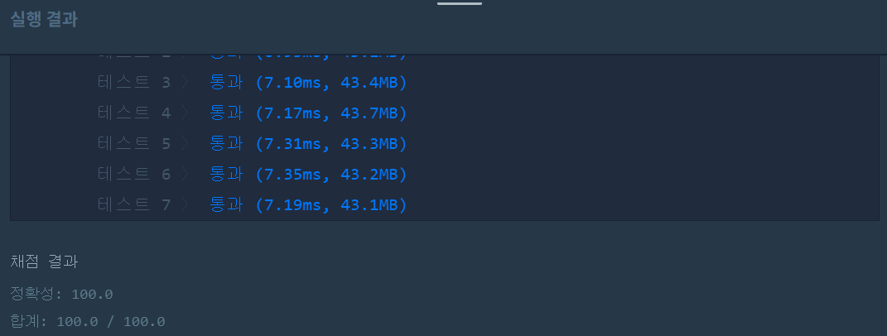

👀 문제
https://programmers.co.kr/learn/courses/30/lessons/42895
👊 도전
1. 설계
=>DFS를 이용한다.
- 재귀함수를 통해 사칙연산을 수행한다.
- cnt(숫자N을 사용한 횟수)가 8보다 크면 -1을 리턴한다.
- 숫자 만들기에 성공하면 answer에 최솟값을 저장한다(처음이라면 그냥 저장, 값이 있다면 비교 후 더 작은 값을 저장).
2. 구현 (성공 코드)
/**
*
* @author HEESOO
*
*/
class Solution {
int answer = -1;//전역변수로 설정
public void dfs(int N, int number, int cnt, int prev){
if(cnt>8){//8번안에 끝내야한다
answer=-1;
return;
}
if(prev==number){
if(answer==-1||cnt<answer){//처음이거나 기존answer보다 더 최솟값을 발견했다면
answer=cnt;
return;
}
}
int NN=0;
for(int i=0;i<8-cnt;i++){//8번안에 끝내야하므로
NN=10*NN+N;//숫자 N으로 만들 수 있는 수
dfs(N, number, cnt+i+1, prev+NN);
dfs(N, number, cnt+i+1, prev-NN);
dfs(N, number, cnt+i+1, prev*NN);
dfs(N, number, cnt+i+1, prev/NN);
}
}
public int solution(int N, int number) {
dfs(N, number, 0, 0);
return answer;
}
}
3. 결과
 🤟 성공 🤟
4. 설명
- answer은 전역변수여야하고, 0으로 초기화하면 안된다.
- answer을 solution()과 dfs()함수에서 사용해야하므로 전역변수로 설정한다. 재귀호출이 이루어지므로 메소드의 파라미터에 넣어 사용하면 값이 재귀를 호출한 곳에 따라서 달라지므로 안된다.
- for문과 재귀함수를 통해 가능한 모든 사칙연산을 수행한다.
- 일의자리숫자 N을 가지고 할 수 있는 사칙연산을 모두 수행한다.
- 그 다음은 십의자리숫자를 가지고 사칙연산이 가능하다. 따라서 NN이라는 변수에 숫자 N으로 만들 수 있는 수를 저장하여 사용한다.
- 이때 for문의 범위는 8-cnt번으로 제한한다. 위 문제는 cnt가 8번 안에 만족시켜야한다(그 이상이면 맨 위에서 -1을 리턴한다). i<8로 작성하면 i는 사용횟수를 나타내는 것이 아니므로 cnt가 재귀를 통해 8번이 넘게 반복하게 된다. 따라서 8-cnt로 N의 사요이 8번을 넘어가지 않게 해야한다.
- prev>number일때 return하는 코드는 작성하면 안된다.
- 무심결에 prev가 number보다 커지면 number를 만족시킬 수 있는 방법은 없다고 생각하여 예외처리 코드를 작성했었는데, prev에서 뺄셈이나 나눗셈으로 다시 number에 가까워(같아)질 수 있는 방법이 있으므로 작성하면 안된다.
👏 해결 완료!
코드를 봤을때는 되게 간단해보이는데 문제는 그렇지 않았다. 그냥 문제를 주고 풀어라 해도 노가다로 뛸 판에 코딩하라니까 더 어려웠다.
참고
- [프로그래머스][JAVA] N으로 표현 https://jayrightthere.tistory.com/entry/DFSJAVA-N%EC%9C%BC%EB%A1%9C-%ED%91%9C%ED%98%84
- [Lv3] N으로 표현 https://ydeer.tistory.com/42
- [그래프] DFS와 BFS 구현하기 :: 마이구미 https://mygumi.tistory.com/102